PERSONAL PORTFOLIO
竹影蝶记
把学到的，做成能用的网站。
你好，我是超级无敌宇宙暴龙战士，一名数字经济专业学生。这里收藏了我做过的小网站，从日常工具、校园生活，到博客、问答和商城。

向下阅读
01 / PROFILE
关于我
超级无敌宇宙暴龙战士数字经济专业学生
我关注数字经济、数据观察和产品实践。这个作品集记录了我的网页练习，从整理一份校园课表，到做出一个能发布内容、管理订单的小型应用。
- 01 个人成绩
- 绩点5.0
- 02 个人成果
- 全国大学生数学建模大赛一等奖
- 03 个人能力
- 我有超能力
- 04 学习经历
- 我接受过10年+教育
05 / 兴趣爱好SPECIMEN № 01

蝶谱 / 采集记录
兴趣小记
- 读经典名著
- 喜欢跟着书里的人物，看看不同年代的人怎么生活、怎么做选择。
- 玩电子游戏
- 空闲时玩一会儿游戏，换换节奏，也试试不同的玩法。
- 做小网站
- 喜欢把课表、待办这类日常需求做成网页，再慢慢琢磨排版和配色。
02 / PROJECT INDEX
作品一览
打开作品看原来的页面，或先读一段项目介绍。